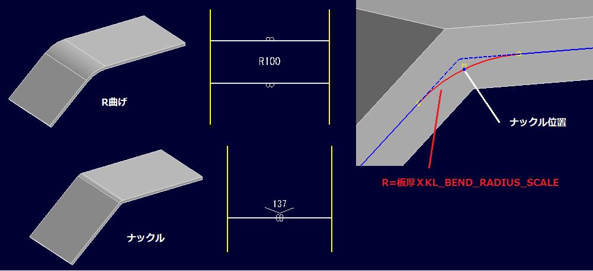
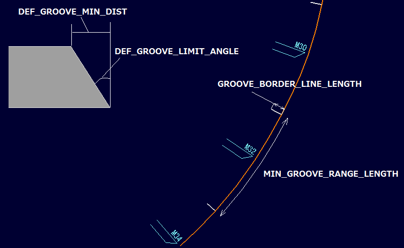
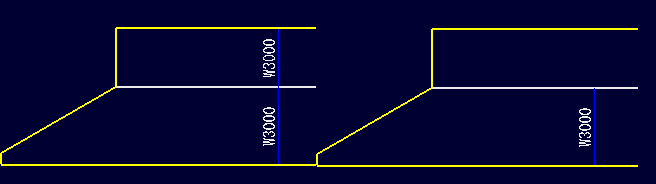
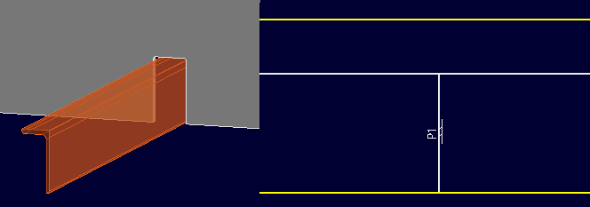
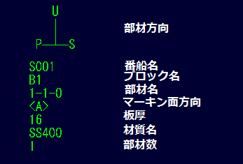
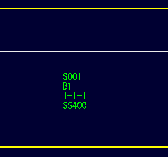
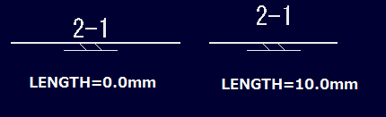
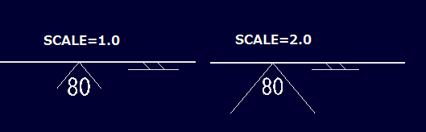
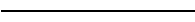

部品図設定ファイル
部品図コマンドで部品図を作成する際の設定ファイルです。 設定ファイルフォルダにあるEvShipPartDwgDataというファイルにcsv形式で設定してあります。 このファイルを編集して設定を変更します。
パラメータ
展開設定
-
ナックル
-
KL_RADIUS_SCALE
曲げのある部材をＲ曲げかナックル処理するかをシステムが判断するための設定です。曲げ部分にフィレットがついていても、板厚にこの値をかけた半径が小さい場合はナックルとして処理します。（そうでない場合はＲ曲げ) 既定値は5.0です。
例) KL_RADIUS_SCALE,5 -
KL_BEND_RADIUS_SCALE
ナックルのある板のナックル部の板芯での長さを決定するために使用します。ナックル部のRがモデリングしてあれば、そのRを板芯までオフセットした長さで展開しますが、そうでない場合は「板厚Xこの値」のR値で決定します。既定値は2.5です。
例) KL_BEND_RADIUS_SCALE,2.5

-
KL_RADIUS_SCALE
-
開先
-
DEF_GROOVE_MIN_DIST
開先をモデルから算出する際の最小の長さを設定します。この値より小さい長さの場合は開先をとりません。既定値は2mmです。
例) 1mm以下では開先を取らない設定
DEF_GROOVE_MIN_DIST,1.0 -
DEF_GROOVE_LIMIT_ANGLE
開先をモデルから算出する際の最大開先角度を設定します。この値より大きい角度の場合は開先角度を設定せず、内側の境界線をマーキン線として描画します。既定値は45°です。
例) 50°を最大角度に設定
DEF_GROOVE_LIMIT_ANGLE,50.0 -
DEF_GROOVE_STEP_ANGLE
開先をモデルから算出する際の角度変化の単位を度で設定します。既定値は2°です。
例) １°単位に設定
DEF_GROOVE_STEP_ANGLE,1 -
MIN_GROOVE_RANGE_LENGTH
倣い開先をモデルから算出する際に同一角度でとる範囲の最小の長さを指定します。これより短い範囲の区間では倣い開先の角度は変化しないようにします。既定値は300mmです。
例) 100mmに設定
MIN_GROOVE_RANGE_LENGTH,100 -
GROOVE_BORDER_LINE_LENGTH
倣い開先で角度が切り替わる部位に描画する直線の長さ(mm)を指定します。既定値は30mmです。
例) 30mmに設定
GROOVE_BORDER_LINE_LENGTH,30 -
NO_GROOVE_INNER_LOOP
0を設定すると、内周線も開先をモデルから計算するようになります。既定値は1です。
例) NO_GROOVE_INNER_LOOP,0 -
NO_GROOVE_SLOT
1を設定すると、スロットの開先を常にとらないように指定できます。既定値は1です。
例) NO_GROOVE_SLOT,1

-
DEF_GROOVE_MIN_DIST
-
型鋼設定
-
SS_MARK_FLANGE
1を設定すると、型鋼のフランジ面にもマーキン線を描きます。既定値は0です。
例) SS_MARK_FLANGE,1
-
SS_MARK_PLATE_DIRECTION
1を設定すると、条材に条材が貫通する板材の板逃げ方向を描画します。既定値は1です。
例) SS_MARK_PLATE_DIRECTION,0
-
SS_HORZ_NOTE
1を設定すると、型鋼に描く文字を常に水平に描くようになります。既定値は0です。
例) SS_HORZ_NOTE,1 -
SS_EXPAND_MERGIN_TOP
逆直線を自動生成するときに使用するマージン（上側）の大きさです。mmで設定します。既定値は25mmです。
例) 50mmに設定 SS_EXPAND_MERGIN_TOP,50.0 -
SS_EXPAND_MERGIN_BOTTOM
逆直線を自動生成するときに使用するマージン（下側）の大きさです。mmで設定します。既定値は5mmです。
例) 10mmに設定 SS_EXPAND_MERGIN_BOTTOM,10.0 -
SS_EXPAND_OVERLAP
逆直線を自動生成するときに使用するオーバーラップの大きさです。mmで設定します。既定値は40mmです。
例) 50mmに設定 SS_EXPAND_OVERLAP,50.0 -
SS_EXPAND_LINE_END_EXTENSION
逆直線を自動生成するときに使用する端部からの延長量を指定します。mmで設定します。既定値は150mmです。
例) 0.0mmに設定 SS_EXPAND_LINE_END_EXTENSION,0.0 -
SS_EXPAND_NA_FACTOR
逆直線展開時に利用するN.A位置を設定します。型鋼のサイズ毎に次の書式で設定をします。
正曲げのN.A.位置補正係数,逆曲げのN.A.位置補正係数,正曲げの逆直線展開補正係数,逆曲げの逆直線展開補正係数,適用する型鋼のサイズ。サイズの指定は部材既定寸法ファイルでの既定寸法名を除いた条材の種類、寸法値です。サイズ毎に複数設定することができます。
例) アングル材、不等辺不等厚山形鋼に設定 SS_EXPAND_NA_FACTOR,1.1,1.2,0.9,0.95,1003,200,90,8,14,14,7
-
SS_MARK_FLANGE
-
その他
-
IGNORE_DIVIDED_PARTS
1を設定すると、分割された部材を部品図として出力しなくなります。既定値は1です。
例) 分割された部材も出力する設定 IGNORE_DIVIDED_PARTS,0 -
TREATE_GENERIC_PARTS_AS_FB
1を設定すると、条材コマンド以外で作成した板部材で下記FB_SIZEであるものをフラットバー（平鋼）として展開します。既定値は0です。
-
FB_SIZE
板部材をフラットバー（平鋼）として識別する際のサイズを幅(mm)、板厚(mm)で設定します。複数設定することができます。
例) 75X9,100X12を設定
TREATE_GENERIC_PARTS_AS_FB,1,
FB_SIZE,75,9
FB_SIZE,100,12 -
DEFINE_PART_SIDE_POSITION_BY_NAMEPOSTFIX
1を設定すると、システムが部材の位置ではなく、部材名末尾の文字でP,C,S舷部材であるかを識別するようになります。既定値は0です。
-
REFLECT_S_SIDE_PARTS
1を設定すると、S舷部材を反転しP舷にあるとした形状で展開をします。既定値は0です。
-
IGNORE_DIVIDED_PARTS
図面設定
-
部材情報
-
DWG_PART_INFO
板部材に描画する部材情報の項目を設定します。以下の設定項目のうち描画したいものを順に設定します。
- PART_DIR
部材の方向を描画します。
- SHIP_NAME
番船名を描画します。
- BLOCK_NAME
ブロック名を描画します。
- PART_NAME
部材名を描画します。
- MARK_SIDE
マーキン面の方向を描画します。
- THICKNESS
板厚を描画します。
- MATERIAL
材質を描画します。
- PART_COUNT
P,C,Sの各位置の部材数を描画します。
例) DWG_PART_INFO,PART_DIR,SHIP_NAME,BLOCK_NAME,PART_NAME,MARK_SIDE,THICKNESS,MATERIAL,PART_COUNT を設定
 - PART_DIR
-
DWG_SS_PART_INFO
板部材に描画する部材情報の項目を設定します。SHIP_NAME,BLOCK_NAME,PART_NAME,MATERIAL,PART_COUNTを指定できます。既定値は設定なしです。
例) DWG_SS_PART_INFO,SHIP_NAME,BLOCK_NAME,PART_NAME,MATERIALを設定
 -
PREFIX_MODEL_NAME
部品図でのモデル名（番船名）のプレフィックス文字を設定します。既定値は設定なしです。
-
PREFIX_BLOCK_NAME
部品図でのブロック名のプレフィックス文字を設定します。既定値は設定なしです。
例) B=B1
PREFIX_BLOCK_NAME,B= -
PREFIX_PART_NAME
部品図での部材名のプレフィックス文字を設定します。既定値は設定なしです。
例) P=1-1-0
PREFIX_PART_NAME,P= -
PREFIX_THICKNESS
部品図での板厚表記のプレフィックス文字を設定します。既定値は設定なしです。
例) T=10
PREFIX_THICKNESS,T= -
PREFIX_MATERIAL
部品図での材質表記のプレフィックス文字を設定します。既定値は設定なしです。
例) M SS400
PREFIX_MATERIAL,M , -
PREFIX_P_COUNT
P舷部材数のプレフィックス文字を設定します。既定値は設定なしです。
例) P=3
PREFIX_P_COUNT,P= -
PREFIX_C_COUNT
C(センター)部材数のプレフィックス文字を設定します。既定値は設定なしです。
例) C=1
PREFIX_C_COUNT,C= -
PREFIX_S_COUNT
S舷部材数のプレフィックス文字を設定します。既定値は設定なしです。
例) S=2
PREFIX_S_COUNT,S= -
MARK_SIDE_STR_F
マーキン面サイドが船首側の場合に使用する文字を指定します。既定値は<F>です。
例) F
MARK_SIDE_STR_F,F -
MARK_SIDE_STR_A
マーキン面サイドが船尾側の場合に使用する文字を指定します。既定値は<A>です。
例) (A)
MARK_SIDE_STR_A,(A) -
MARK_SIDE_STR_P
マーキン面サイドがP舷側の場合に使用する文字を指定します。既定値は<P>です。
例) [P]
MARK_SIDE_STR_P,[P] -
MARK_SIDE_STR_S
マーキン面サイドがS舷側の場合に使用する文字を指定します。既定値は<S>です。
例) =S=
MARK_SIDE_STR_S,=S= -
MARK_SIDE_STR_U
マーキン面サイドが上(アッパー)側の場合に使用する文字を指定します。既定値は<U>です。
例) - U -
MARK_SIDE_STR_U,- U - -
MARK_SIDE_STR_B
マーキン面サイドが下(ボトム)側の場合に使用する文字を指定します。既定値は<B>です。
例) <D>
MARK_SIDE_STR_B,<D> -
MARK_SIDE_STR_I
マーキン面サイドが内側の場合に使用する文字を指定します。既定値は<I>です。
-
MARK_SIDE_STR_O
マーキン面サイドが外側の場合に使用する文字を指定します。既定値は<O>です。
-
PART_DIRMARK_STR_F
部材の方向の船首側を指示する文字を指定します。既定値はFです。
-
PART_DIRMARK_STR_A
部材の方向の船尾側を指示する文字を指定します。既定値はAです。
-
PART_DIRMARK_STR_P
部材の方向のP舷側を指示する文字を指定します。既定値はPです。
-
PART_DIRMARK_STR_S
部材の方向のS舷側を指示する文字を指定します。既定値はSです。
-
PART_DIRMARK_STR_U
部材の方向の上(アッパー)側を指示する文字を指定します。既定値はUです。
-
PART_DIRMARK_STR_B
部材の方向の下(ボトム)側を指示する文字を指定します。既定値はBです。
-
PART_DIRMARK_STR_I
部材の方向の内側を指示する文字を指定します。既定値はIです。
-
PART_DIRMARK_STR_O
部材の方向の外側を指示する文字を指定します。既定値はOです。
-
DWG_PART_INFO
-
部材の取付線,マーキン線
-
MARK_TEXT_OFFSET_FROM_LINE
取付線につく部材名などの文字の取付線からのオフセット量をmmで設定します。既定値は0.0です。
例) 10mmに設定 MARK_TEXT_OFFSET_FROM_LINE,10.0
 -
ALWAYS_DRAW_ATTACH_PART_LINES
0を設定すると、取付部材設定コマンドで設定された部材の取付線のみを描画するようになります。既定値は1です。
例) ALWAYS_DRAW_ATTACH_PART_LINES,0 -
ALWAYS_DRAW_ATTACH_PART_NAMES
1を設定すると、取付部材名称を常に描画するようになります。設定されない場合は取付部材設定コマンドの設定に従います。既定値は0です。
例) ALWAYS_DRAW_ATTACH_PART_NAMES,1 -
SNIP_END_MARK_LENGTH
条材の端部がスニップである場合に描く端部の直線の長さ(mm)を指定します。0の場合は描画しません。既定値は25.0です。
例) 10mm SNIP_END_MARK_LENGTH,10.0
-
USE_MATERIAL_SIZE_FOR_SS_ATTACH_MARK
1を設定すると、条材の取付線に条材の部材名ではなくスカントリングを描画するようになります。既定値はOです。
例) USE_MATERIAL_SIZE_FOR_SS_ATTACH_MARK,1
-
USE_MATERIAL_SIZE_FOR_SS_ATTACH_MARK_CONDITIONAL
1を設定すると、指定した寸法の条材の取付線に条材の部材名ではなく指定したスカントリング文字列を描画するようになります。サイズ,スカントリング文字列の指定はMATERIAL_SIZE_FOR_SS_ATTACH_MARKを使用して指定します。既定値はOです。
-
MATERIAL_SIZE_FOR_SS_ATTACH_MARK
スカントリング表記とする条材寸法,表記する文字列を指定します。指定方法は部材既定寸法ファイルでの既定寸法名を除いた条材の種類、寸法値です。
例) 平鋼(フラットバー)75,9に 75 X 9,アングル材,不等辺不等厚山形鋼(200,90,9,14)に200X90X9/14をスカントリング表記
USE_MATERIAL_SIZE_FOR_SS_ATTACH_MARK_CONDITIONAL,1
MATERIAL_SIZE_FOR_SS_ATTACH_MARK,75 X 9,1007,75,9
MATERIAL_SIZE_FOR_SS_ATTACH_MARK,200X90X9/14,1003,200,90,9,14,14,7 -
DRAW_MATERIAL_NAME_FOR_SS_ATTACH_MARK
1を設定すると、スカントリング表記された条材の取付線に材質名も描画するようになります。既定値はOです。
例) DRAW_MATERIAL_NAME_FOR_SS_ATTACH_MARK,1
-
ATTACH_PART_MARK_TYPE
板逃げ方向に使用するマークのタイプを指定します。
- 設定されない場合(既定値)
- 円弧 (1を指定)
円弧の半径と中心角を指定
例) 半径50mm,中心角90°を指定 ATTACH_PART_MARK_TYPE,1,50.0,90.0
- 三角形 (2を指定)
三角形の底辺の長さ、高さを指定
例) 底辺50mm,高さ30mmを指定 ATTACH_PART_MARK_TYPE,2,50,30
- 設定されない場合(既定値)
-
DRAW_SS_ANGLE_MARK
背側がモールドのアングル材の取付線にアングル方向を示すＬ字形のマークを描画するようになります。マークの形状は、取付線からのオフセット量(アングル方向が正)、マークの長さ、マークの高さをmmで指定します。
例) オフセット量3mm,長さ50mm,高さ30mm
DRAW_SS_ANGLE_MARK,3,30,10
-
DRAW_SS_ANGLE_MARK_REV
腹側がモールドのアングル材の取付線にアングル方向を示すＬ字形のマークを描画するようになります。マークの形状は、取付線からのオフセット量(アングル方向が正)、マークの長さ、マークの高さをmmで指定します。
例) オフセット量-3mm,長さ50mm,高さ30mm
DRAW_SS_ANGLE_MARK_REV,-3,30,10
-
DRAW_SS_BULB_MARK
背側がモールドのバルブプレート（球平形鋼)の取付線にアングル方向を示すP字形のマークを描画するようになります。マークの形状は、取付線からのオフセット量(アングル方向が正)、マークの長さ、マークの高さ、先端部の長さをmmで指定します。
例) オフセット量3mm,長さ30mm,高さ10mm,先端部,7mm
DRAW_SS_BULB_MARK,3,30,10,7
-
DRAW_SS_BULB_MARK_REV
背側がモールドのバルブプレート（球平形鋼)の取付線にアングル方向を示すP字形のマークを描画するようになります。マークの形状は、取付線からのオフセット量(アングル方向が正)、マークの長さ、マークの高さ、先端部の長さをmmで指定します。
例) オフセット量-3mm,長さ30mm,高さ10mm,先端部,7mm
DRAW_SS_BULB_MARK_REV,-3,30,10,7
-
DWG_SS_ANGLE_MARK_COLOR
アングル方向マーク(アングル材、バルブプレート)の色をRGB(0〜255)値で設定します。
例)赤 DWG_SS_ANGLE_MARK_COLOR,255,0,0
-
DRAW_SS_END_ANNOTATION
指定する条材端部形状をもつ条材の取付線の端部に指定の文字を描画します。複数設定することができます。部材既定寸法ファイルでの端部形状番号、指定文字で設定します。
例) 端部形状のS,Wである場合にそれぞれ、S,Wを描画する
DRAW_SS_END_ANNOTATION,1101,S
DRAW_SS_END_ANNOTATION,1102,W
-
SS_END_ANNOTATION_POSITION_OFFSET
条材端部形状種の指定文字の位置の取付線の端部位置からのオフセット量を端部形状の種類毎にmmで指定します。複数設定することができます。
例) 端部形状のS,Wである場合にそれぞれ,20mm,50mmのオフセット量を設定
SS_END_ANNOTATION_POSITION_OFFSET,1101,20
SS_END_ANNOTATION_POSITION_OFFSET,1102,50
-
ATTACH_ANGLE_MARK_LINE_LENGTH_SCALE
取付線の取付角度表記の線の長さの文字のサイズを1.0とする比率を指定します。既定値は1.0です。
例) 2.0を設定 ATTACH_ANGLE_MARK_LINE_LENGTH_SCALE,2.0
 -
DRAW_EXTENSION_INFO
1を設定すると、端部のばしの情報をマーキン文字として描画します。既定値は0です。
例) DRAW_EXTENSION_INFO,1
-
DRAW_ALL_ATTACH_AT_BORDER_PARTS
1を設定すると、板部材の側面にあたる部材の止まり位置を直線で描画するようになります。既定値は1です。
-
ATTACH_AT_BORDER_END_MARK_LINE_LENGTH
板部材の側面にあたる部材の止まり位置に描画される直線の長さをmmで設定します。既定値は30mmです。
例) 50mmを設定 ATTACH_AT_BORDER_END_MARK_LINE_LENGTH
-
IGNORE_HOLES_FOR_GRID_LINES
1を設定すると、穴を無視してフレームスペース、バトックライン、ウォーターラインのマーキン線を描くようになります。既定値はOです。
-
IGNORE_HOLES_FOR_ATTACH_LINES
1を設定すると、穴を無視して取付線を描くようになります。既定値はOです。
-
IGNORE_SCALLOPS_FOR_ATTACH_LINES
1を設定すると、部材の取付線をその取付部位中にあるスカラップやスロット部分で取付線を分けないようになります。既定値はOです。
-
MIN_DRAW_ATTACH_PART_LINE_LENGTH
描画する取付線の最小の長さをmmで設定します。この長さより短い取付線を描画しなくなります。既定値は0.0mmです。
例) 50mmを設定 MIN_DRAW_ATTACH_PART_LINE_LENGTH,50.0 -
MIN_DRAW_MOLD_MARK_LINE_LENGTH
板逃げ方向を描画する取付線の最小の長さをmmで設定します。この長さより短い取付線には板逃げ方向を描画しなくなります。既定値は0.0mmです。
例) 150mmを設定 MIN_DRAW_MOLD_MARK_LINE_LENGTH,150.0 -
MIN_DRAW_ATTACH_PART_NAME_LINE_LENGTH
部材名を描画する取付線の最小の長さをmmで設定します。この長さより短い取付線には部材名を描画しなくなります。既定値は0.0mmです。
例) 150mmを設定 MIN_DRAW_ATTACH_PART_NAME_LINE_LENGTH,150.0 -
MIN_DRAW_ATTACH_ANGLE
取付部材が母材の垂直方向からここで設定する角度より小さい場合に取付度を描画しなくなります。既定値は２°です。
-
MARK_TEXT_OFFSET_FROM_LINE
-
文字、線のスタイル
-
FONT_SIZE
図面上の文字のサイズをmmで設定します。
例) 20mmに設定
FONT_SIZE,20 -
DWG_OUTER_LINE_WIDTH
部品図の外形線の線幅です。1(細い)〜8(太い)で設定します。
例) DWG_OUTER_LINE_WIDTH,2 -
DWG_OUTER_LINE_STYLE
部品図の外形線の線種を設定します。設定値
例) DWG_OUTER_LINE_STYLE,0 -
DWG_OUTER_LINE_COLOR
部品図の外形線の色をRGB(0〜255)値で設定します。
例) DWG_OUTER_LINE_COLOR,255,255,0 -
DWG_GROOVE_LINE_WIDTHp
部品図の開先をとる外周線の線幅です。1(細い)〜8(太い)で設定します。
例) DWG_GROOVE_LINE_WIDTH,2 -
DWG_GROOVE_LINE_STYLE
部品図の開先をとる外周線の線種を設定します。設定値
例) DWG_GROOVE_LINE_STYLE,0 -
DWG_GROOVE_LINE_COLOR
部品図の開先をとる外周線の色をRGB(0〜255)値で設定します。
例) DWG_GROOVE_LINE_COLOR,255,128,0 -
DWG_INNER_LINE_WIDTH
部品図の内周(穴)線の線幅です。1(細い)〜8(太い)で設定します。
例) DWG_INNER_LINE_WIDTH,2 -
DWG_INNER_LINE_STYLE
部品図の内周(穴)線の線種を設定します。設定値
例) DWG_INNER_LINE_STYLE,0 -
DWG_INNER_LINE_COLOR
部品図の内周(穴)線の色をRGB(0〜255)値で設定します。
例) DWG_INNER_LINE_COLOR,255,128,192 -
DWG_MARK_LINE_WIDTH
部品図のマーキン線の線幅です。1(細い)〜8(太い)で設定します。
例) DWG_MARK_LINE_WIDTH,2 -
DWG_MARK_LINE_STYLE
部品図のマーキン線の線種を設定します。設定値
例) DWG_MARK_LINE_STYLE,0 -
DWG_MARK_LINE_COLOR
部品図のマーキン線の色をRGB(0〜255)値で設定します。
例) DWG_MARK_LINE_COLOR,235,235,235 -
DWG_MARK_TEXT_COLOR
部品図のマーク文字の色をRGB(0〜255)値で設定します。
例) DWG_MARK_TEXT_COLOR,235,235,235 -
DWG_AUX_LINE_WIDTH
部品図の補助線の線幅です。1(細い)〜8(太い)で設定します。
例) DWG_AUX_LINE_WIDTH,1 -
DWG_AUX_LINE_STYLE
部品図の補助線の線種を設定します。設定値
例) DWG_AUX_LINE_STYLE,0 -
DWG_AUX_LINE_COLOR
部品図の補助線の色をRGB(0〜255)値で設定します。
例) DWG_AUX_LINE_COLOR,128,255,255 -
DWG_AUX_TEXT_COLOR
部品図の補助線文字の色をRGB(0〜255)値で設定します。
例) DWG_AUX_TEXT_COLOR,128,255,255 -
DWG_PARTINFO_LINE_WIDTH
部品図の部材情報の線の線幅です。1(細い)〜8(太い)で設定します。
例) DWG_PARTINFO_LINE_WIDTH,1 -
DWG_PARTINFO_LINE_STYLE
部品図の部材情報の線種を設定します。設定値
例) DWG_PARTINFO_LINE_WIDTH,1 -
DWG_PARTINFO_LINE_COLOR
部品図の部材情報の線の色をRGB(0〜255)値で設定します。
例) DWG_PARTINFO_LINE_COLOR,0,242,0 -
DWG_PARTINFO_TEXT_COLOR
部品図の部材情報の文字ーの色をRGB(0〜255)値で設定します。
例) DWG_PARTINFO_TEXT_COLOR,0,242,0 -
DWG_REVPART_LINE_WIDTH
部品図の裏面への部材の取付線の線幅です。1(細い)〜8(太い)で設定します。
例) DWG_REVPART_LINE_WIDTH,2 -
DWG_REVPART_LINE_STYLE
部品図の裏面への部材の取付線の線種を設定します。設定値
例) DWG_REVPART_LINE_STYLE,1 -
DWG_REVPART_LINE_COLOR
部品図の裏面への部材の取付線の色をRGB(0〜255)値で設定します。
例) DWG_REVPART_LINE_COLOR,235,235,235 -
DWG_REVPART_TEXT_COLOR
部品図の裏面への部材の部材名称文字の色をRGB(0〜255)値で設定します。
例) DWG_REVPART_TEXT_COLOR,235,235,235 -
DWG_GRID_LINE_WIDTH
部品図のフレームスペース、バトックライン、ウォーターラインのマーキン線の線幅です。1(細い)〜8(太い)で設定します。
例) DWG_GRID_LINE_WIDTH,1 -
DWG_GRID_LINE_STYLE
部品図のフレームスペース、バトックライン、ウォーターラインのマーキン線の線種を設定します。設定値
例) DWG_GRID_LINE_STYLE,0 -
DWG_GRID_LINE_COLOR
部品図のフレームスペース、バトックライン、ウォーターラインのマーキン線の色をRGB(0〜255)値で設定します。
例) DWG_GRID_LINE_COLOR,0,0,255 -
DWG_PART_INFO_DIR_TEXT_COLOR
部材情報の部材の方向、マーキン面の方向の文字色をRGB(0〜255)値で設定します。
例) DWG_PART_INFO_DIR_TEXT_COLOR,255,0,0 -
DWG_PART_INFO_SHIP_NAME_COLOR
部材情報の番船名の文字色をRGB(0〜255)値で設定します
例) DWG_PART_INFO_SHIP_NAME_COLOR,255,0,0 -
DWG_PART_INFO_BLOCK_NAME_COLOR
部材情報のブロック名の文字色をRGB(0〜255)値で設定します。
例) DWG_PART_INFO_BLOCK_NAME_COLOR,255,0,0 -
DWG_PART_INFO_PART_NAME_COLOR
部材情報の部材名の文字色をRGB(0〜255)値で設定します。
例) DWG_PART_INFO_PART_NAME_COLOR,255,0,0 -
DWG_PART_INFO_MATERIAL_NAME_COLOR
部材情報の材質名の文字色をRGB(0〜255)値で設定します。
例) DWG_PART_INFO_MATERIAL_NAME_COLOR,255,0,0 -
DWG_PART_INFO_THICKNESS_COLOR
部材情報の板厚の文字色をRGB(0〜255)値で設定します。
例) DWG_PART_INFO_THICKNESS_COLOR,255,0,0 -
DWG_PART_INFO_PART_COUNT_COLOR
部材情報のP,C,Sの各位置の部材数表記の文字色をRGB(0〜255)値で設定します。
例) DWG_PART_INFO_PART_COUNT_COLOR,255,0,0
-
FONT_SIZE
※線種の設定値
- 0 
- 1

- 2

- 3

- 4

- 5

- 6

- 7